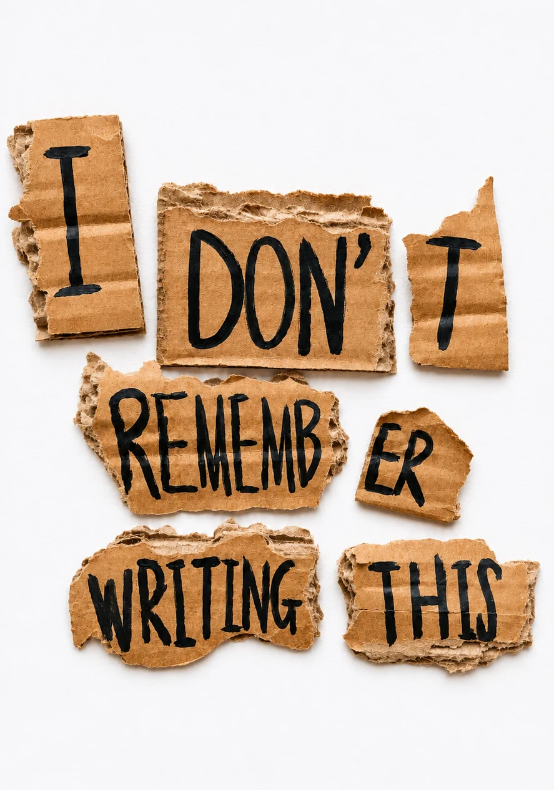

我不記得我寫過這個 STORY

重要的不是批評家，不是那個指出強者在哪裡跌倒、事情本來可以怎麼做得更好的人。真正值得敬佩的，是站在競技場裡，滿臉塵土、汗水和鮮血的人。他奮力拚搏，一再犯錯、一再失手，因為努力不可能沒有錯誤和缺失。但他確確實實努力去做了。
他懂得全心投入，把自己獻給值得的事。最好的情況，是他最終嚐到成就的喜悅；最糟的情況，就算失敗了，他也是放膽一搏才失敗的。他永遠不會與那些冷漠又膽怯、既不知勝利也不知失敗的人站在一起。
I GOTOPINIONS,UNFORTUNATELY
SOME OF THESE WILL AGE BADLY.Oh well